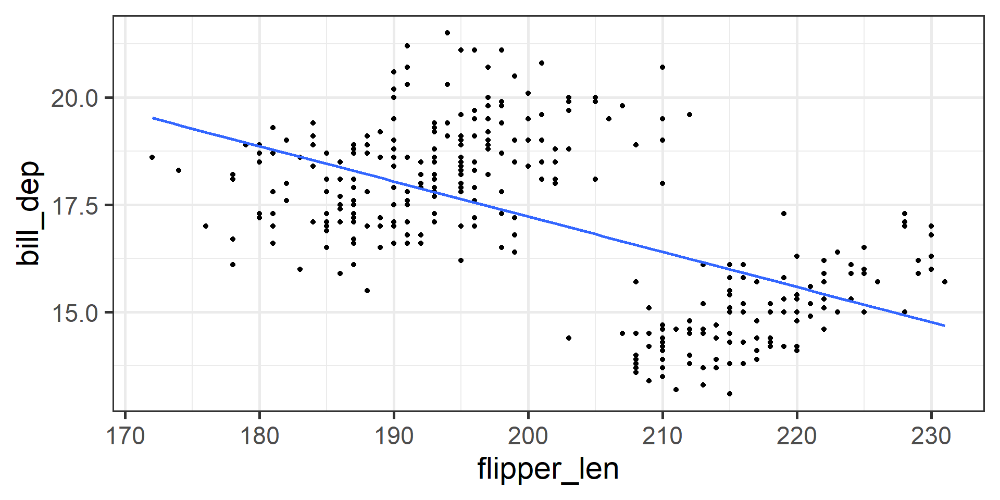
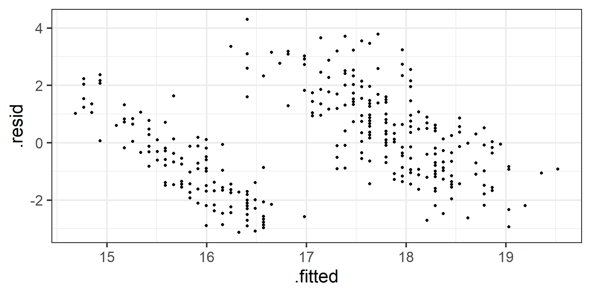
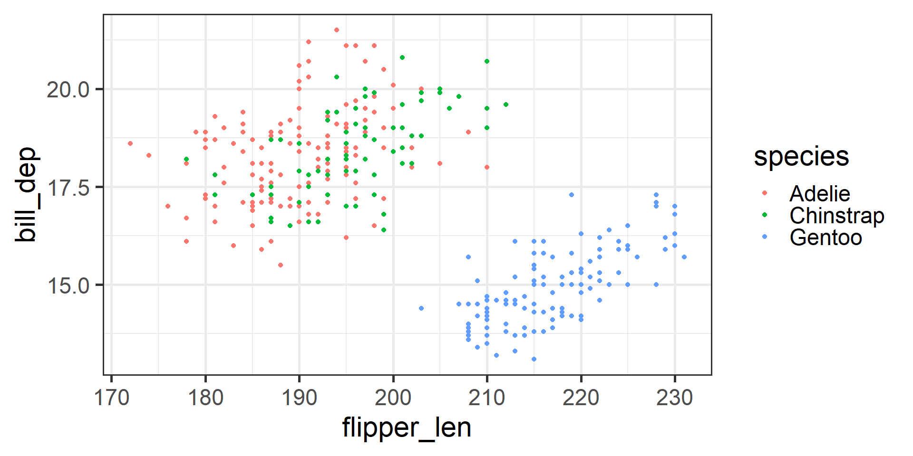
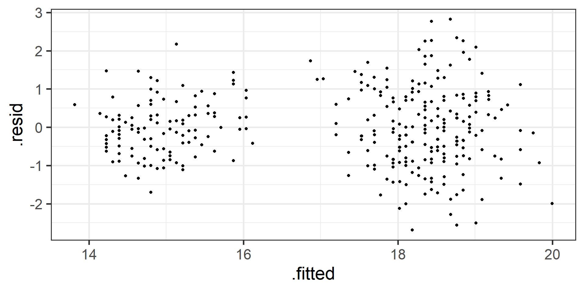
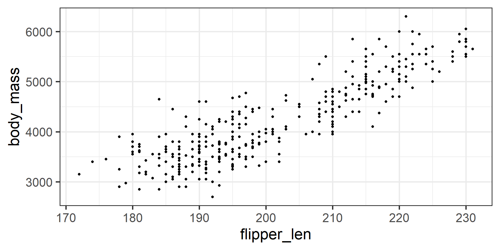
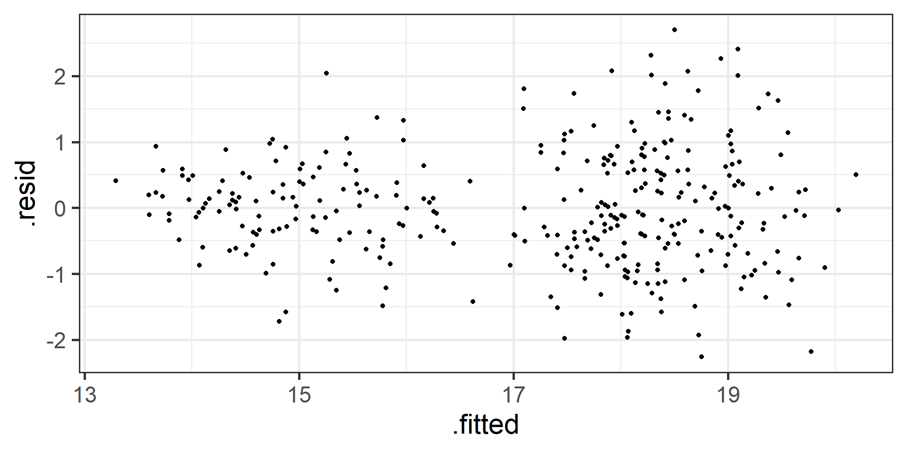
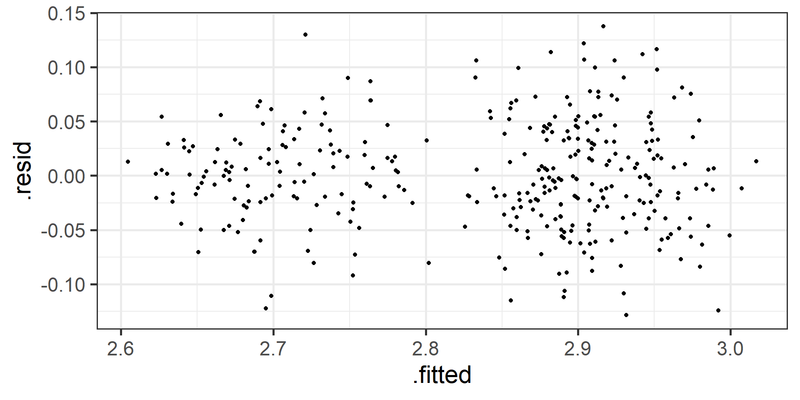

Data 200: Lecture 11A
Multiple Linear Regression, categorical predictors, transformations, model evaluation
Last week we learned about simple linear regression
\[y_i = \beta_0 +\beta_1x_{1i} + \epsilon_i\]
Last class we learned how to check if the conditions for simple linear regression were met.
Today we will learn how we can adjust our model.
In your homework you looked at the penguins data.
Let’s see if we can model bill depth from flipper length
| Variable | Symbol | Relationship | Type |
|---|---|---|---|
| Bill depth | \(y\) | Response | Numeric |
| Flipper length | \(x_1\) | Explanatory | Numeric |

Model checking
Independence (need context)
Linearity (plot residual)
Constant Variance (plot residuals)
Normality of Residuals (plot residuals)
Model checking: Linearity
Do the residuals look random or do you see a pattern?

This pattern could be due to an unmodeled variable.
Simple linear regression = only one \(X\)
\[y_i = \beta_0 +\beta_1x_{1i} + \epsilon_i\]
Multiple linear regression = multiple \(X\)’s
\[y_i = \beta_0 +\beta_1x_{1i} + \beta_1 x_{2i} + ... + \beta_p x_{pi} \epsilon_i\]

Let’s also consider species type in our model
| Variable | Symbol | Relationship | Type |
|---|---|---|---|
| Bill depth | \(y\) | Response | Numeric |
| Flipper length | \(x_1\) | Explanatory | Numeric |
| Species | \(x_2\) | Explanatory | Categorical |
Model checking: Linearity
Do the residuals look random or do you see a pattern?

The residuals are looking more random now.
Comparing models
# A tibble: 2 × 5
term estimate std.error statistic p.value
<chr> <dbl> <dbl> <dbl> <dbl>
1 (Intercept) 33.6 1.25 27.0 1.39e-86
2 flipper_len -0.0820 0.00618 -13.3 1.23e-32Predicted Bill Depth = 33.6 + -0.1 * Flipper Length
# A tibble: 4 × 5
term estimate std.error statistic p.value
<chr> <dbl> <dbl> <dbl> <dbl>
1 (Intercept) 2.72 1.52 1.78 7.56e- 2
2 flipper_len 0.0823 0.00801 10.3 1.05e-21
3 speciesChinstrap -0.409 0.151 -2.71 7.01e- 3
4 speciesGentoo -5.61 0.249 -22.5 2.40e-69Predicted Bill Depth = 2.7 + 0.1 * Flipper Length + -0.4 I(Species = Chinstrap) + -5.6 I(Species = Gentoo)
Categorical predictors
Categorical \(X\)’s
Predicted Bill Depth = 2.7 + 0.1 * Flipper Length + -0.4 I(Species = Chinstrap) + -5.6 I(Species = Gentoo)
The I() function only gives value 1 if true, and 0 if false
- These are used for categorical predictors
- Recall there are three levels for species, but notice only 2 species levels appear in our model
- Reference level is the omitted level for a categorical variable
- For every categorical variable with \(k\) levels, there will be \(k-1\) predictors in the model (because of math…)
Predicted Bill Depth = 2.7 + 0.1 * Flipper Length + -0.4 I(Species = Chinstrap) + -5.6 I(Species = Gentoo)
Predicted Bill Depth for a Gentoo penguin with a flipper length of 200mm:
2.7 + 0.1 * 200 + -0.4 x 0 + -5.6 x 1 = 13.6
Predicted Bill Depth for a Chinstrap penguin with a flipper length of 200mm:
2.7 + 0.1 * 200 + -0.4 x 1 + -5.6 x 0 = 18.8
Predicted Bill Depth for an Adelie penguin with a flipper length of 200mm:
2.7 + 0.1 * 200 + -0.4 x 0 + -5.6 x 0 = 19.2
Let’s also consider body mass type in our model
| Variable | Symbol | Relationship | Type |
|---|---|---|---|
| Bill depth | \(y\) | Response | Numeric |
| Flipper length | \(x_1\) | Explanatory | Numeric |
| Species | \(x_2\) | Explanatory | Categorical |
| Body mass | \(x_3\) | Explanatory | Numeric |
It gets harder/impossible to visualize our model the more predictors we have. Instead we can still look at a plot of \(Y\) and one \(X\) to see if we think they are linearly related.

Comparing models
# A tibble: 4 × 5
term estimate std.error statistic p.value
<chr> <dbl> <dbl> <dbl> <dbl>
1 (Intercept) 2.72 1.52 1.78 7.56e- 2
2 flipper_len 0.0823 0.00801 10.3 1.05e-21
3 speciesChinstrap -0.409 0.151 -2.71 7.01e- 3
4 speciesGentoo -5.61 0.249 -22.5 2.40e-69penguins_model_3 <- lm(bill_dep ~ flipper_len + species + body_mass, data = penguins)
tidy(penguins_model_3)# A tibble: 5 × 5
term estimate std.error statistic p.value
<chr> <dbl> <dbl> <dbl> <dbl>
1 (Intercept) 7.72 1.43 5.39 1.36e- 7
2 flipper_len 0.0317 0.00870 3.65 3.09e- 4
3 speciesChinstrap -0.152 0.135 -1.13 2.61e- 1
4 speciesGentoo -5.94 0.221 -26.8 1.54e-85
5 body_mass 0.00124 0.000125 9.93 1.45e-20Model checking: Constant variance of residuals
Do the residuals appear to have constant variance?

There does seem to be higher variance for higher fitted/predicted values. A possible solution could be to transform the response variable.
Transformations
Common transformations to correct for non constant variance of residuals:
- \(log(Y)\)
- \(\sqrt{Y}\)
Let’s consider log(bill depth) as our response variable

Let’s also consider body mass type in our model
| Variable | Symbol | Relationship | Type |
|---|---|---|---|
| log(Bill depth) | \(y\) | Response | Numeric |
| Flipper length | \(x_1\) | Explanatory | Numeric |
| Species | \(x_2\) | Explanatory | Categorical |
| Body mass | \(x_3\) | Explanatory | Numeric |
Note in R log() is natural log() = () = \(\text{log}_e\)()
penguins_model_4 <- lm(log(bill_dep) ~ flipper_len + species + body_mass, data = penguins)
tidy(penguins_model_4)# A tibble: 5 × 5
term estimate std.error statistic p.value
<chr> <dbl> <dbl> <dbl> <dbl>
1 (Intercept) 2.27 0.0815 27.9 1.20e-89
2 flipper_len 0.00190 0.000494 3.84 1.45e- 4
3 speciesChinstrap -0.00921 0.00768 -1.20 2.31e- 1
4 speciesGentoo -0.355 0.0126 -28.2 8.38e-91
5 body_mass 0.0000734 0.00000710 10.3 6.15e-22Predicted log(Bill Depth) = 2.3 + 0 Flipper Length + 0 I(Species = Chinstrap) + -0.4 I(Species = Gentoo) + 0 Body Mass
Predicted Bill Depth = e^{2.3 + 0 Flipper Length + 0 I(Species = Chinstrap) + -0.4 I(Species = Gentoo) + 0 Body Mass }
Model checking: Constant variance of residuals
Do the residuals appear to have constant variance?

Did we make a better model?
Model Evaluation
Common evaluation metrics
- \(R^2\)
- Adjusted \(R^2\)
- Root Mean Square Error (RMSE)
For models that meet the conditions of linear regression.
\(R^2\)
\(R^2\) is the percent of variation on \(Y\) explained by \(X\)
- Informs about how well the model fits the data
- Bounded between 0 and 1
\(R^2\)
# A tibble: 1 × 12
r.squared adj.r.squared sigma statistic p.value df logLik AIC BIC
<dbl> <dbl> <dbl> <dbl> <dbl> <dbl> <dbl> <dbl> <dbl>
1 0.811 0.809 0.863 362. 1.43e-120 4 -432. 877. 900.
# ℹ 3 more variables: deviance <dbl>, df.residual <int>, nobs <int># A tibble: 1 × 12
r.squared adj.r.squared sigma statistic p.value df logLik AIC BIC
<dbl> <dbl> <dbl> <dbl> <dbl> <dbl> <dbl> <dbl> <dbl>
1 0.828 0.825 0.0490 404. 3.50e-127 4 548. -1085. -1062.
# ℹ 3 more variables: deviance <dbl>, df.residual <int>, nobs <int>Model 4 explains 83% of the variation in log(Bill Depth).
Model 3 explains 81% of the variation in Bill Depth.
So model 4 appears to be a slightly better fit for the data.
Adjusted \(R^2\)
A major issue with \(R^2\) is that it will always increase when you add another predictor \(X\), even if it is not a better model.
A more responsible metric to use is Adjusted \(R^2\), which account for the number of predictors in your model
Adjusted R-Squared
When comparing models with multiple predictors we rely on Adjusted R-squared.
# A tibble: 1 × 12
r.squared adj.r.squared sigma statistic p.value df logLik AIC BIC
<dbl> <dbl> <dbl> <dbl> <dbl> <dbl> <dbl> <dbl> <dbl>
1 0.756 0.754 0.980 349. 4.07e-103 3 -476. 963. 982.
# ℹ 3 more variables: deviance <dbl>, df.residual <int>, nobs <int># A tibble: 1 × 12
r.squared adj.r.squared sigma statistic p.value df logLik AIC BIC
<dbl> <dbl> <dbl> <dbl> <dbl> <dbl> <dbl> <dbl> <dbl>
1 0.828 0.825 0.0490 404. 3.50e-127 4 548. -1085. -1062.
# ℹ 3 more variables: deviance <dbl>, df.residual <int>, nobs <int>Adjusted \(R^2\) supports that model 4 (Adj \(R^2\) = 0.83) is a better fit for our data than model 2 (Adj \(R^2\) = 0.75).
Root Mean Square Error
\(RMSE = \sqrt{\frac{\Sigma_{i=1}^n(y_i-\hat y_i)^2}{n}}\)
- “Essentially” measuring average prediction error for our model
- Lowest possible value is 0
- Same units as \(Y\)
The predictions from model 2 are, on average, off by 0.97 mm.
The predictions from model 3 are, on average, off by 0.86 mm.
Units of RMSE
The predictions for bill depth from model 3 are, on average, off by 0.86 mm.
The predictions for log(bill depth) from model 4 are, on average, off by 0.05 mm.
We should not use RMSE to compare models with different \(y\)’s.
Overfitting
Can we keep adding all the variables and try to get an EXCELLENT model fit?
Overfitting
We are fitting the model to sample data.
Our goal is to understand the population data.
If we make our model too perfect for our sample data, the model may not perform as well with other sample data from the population.
In this case we would be overfitting the data.
We can use model validation techniques.
Splitting the data
To avoid overfitting we can split our data
- Some of the data will be reserved for fitting/training our model
- The rest of the data will be reserved for evaluating the prediction of our model
Splitting the data (Train vs. Test)
Fit the model with the training data
Predict bill length for penguins in testing data
In sample (train) RMSE
Our of sample (test) RMSE
predicted_y <- model_3_test_preditions
actual_y <- penguins_test_data$bill_dep
sqrt(mean((predicted_y - actual_y)^2, na.rm = TRUE))[1] 0.8598263Does it make sense that our in-sample RMSE > out-of-sample RMSE?